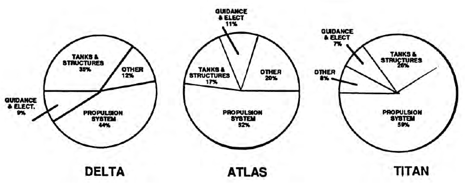

Lecture 4
Solid Rocket Motors (SRMs) Propulsion
Outline of the lecture
- Introduction
- Compressible flow
- Performance indices
- Space mission requirements
- Thermal rocket engines
- Liquid propellant engines
- Solid rocket motors
- Electric thrusters
- Secondary propulsion
- Staging
- Some current developments
- Possible future developments
Goals of space propulsion
propellere (latin) = “push forward”
In order to:
- attain very high speed
- overcome gravity/aerodynamic forces
- maneuvers
- attitude adjustment
- decelerate (re-entry, soft landing)
Thrust generated as reaction to expulsion of a propellant fluid
Key requirement: lightweight (both engine and propellants) and cost
Thrust generation
- Reaction to ejection of propulsive fluid momentum:
- rocket engine: propellants stored on board \rightarrow products
|
Engine
|
Thrust (kN) SL/Vacuum
|
Adopted by
|
Price (M$)
|
Year
|
|
Vulcain 2
|
960 / 1359
|
Ariane 5
|
12
|
2017
|
|
RS–25
|
1860 / 2279
|
Space Shuttle
|
50
|
2011
|
|
RS–68
|
2950 / 3137
|
Delta IV
|
15
|
2006
|
|
RD–180
|
3830 / 4150
|
Atlas V
|
23.5
|
2017
|
Search for simplicity (to reduce costs and improve reliability) \rightarrow contain part count
Engineering goal
- attain given target at minimum cost
- costs of a space mission:
- launcher, payload, launch operations, monitoring, insurance, propellants

Classification based on Energy Source
– Exhaust jet momentum generated by means of energy…
- Chemical: Oxidizer/Fuel, Monopropellant (Thermal)
- Solar: Thermal, Electric
- (Electric): Solar, Nuclear, Chemical
- Nuclear: Thermal
Classification based on Propulsive Principle
– Transformation of primary energy into jet kinetic energy…
- Thermal: Chemical, Nuclear, Solar
- Electrostatic (ions): Electrical ← Solar,
- Electromagnetic (plasma): Electrical ← Solar
2 & 3 give low thrust/weight ratios (cannot lift off from the ground).
Lecture’s objective
We want to understand how the nozzle design of a thermo-chemical solid rocket motor influences the thrust and the specific impulse
Ideal Nozzle
Hypotheses:
- combustion details ignored
- thermally and calorically perfect
- non-reactive, homogeneous gas
- steady flow
- 1D or quasi-1D model
- negligible nozzle inlet flow velocity
- conditions are uniform in space and time
- isentropic flow (unless shocks)
- inviscid and adiabatic flow

A quasi 1D duct.
For mass conservation:
\rho u A = (\rho + d\rho)(u + du)(A + dA) \quad \Rightarrow \quad d(\rho u A) = 0 \quad \Rightarrow \quad \dot{m} = \rho u A = \text{const.}
For momentum conservation:
\dot{m}(u + du) - \dot{m}u = pA + \left(p + \frac{dp}{2}\right)dA - \left(p + dp\right)(A + dA) \quad \Rightarrow \quad dp + \rho u du = 0
For energy conservation:
\dot{m} \left[e + \frac{u^2}{2} + d \left(e + \frac{u^2}{2} \right) \right] - \dot{m} \left(e+\frac{u^2}{2}\right) = puA - (p + dp)(u + du)(A + dA)
\dot{m} d\left(e + \frac{u^2}{2}\right) + d(puA) = 0 \quad \Rightarrow \quad \dot{m} d\left(e + \frac{u^2}{2}\right) + d\left(\dot{m} \frac{p}{\rho}\right) = 0
\dot{m} d\left(e + \frac{p}{\rho} + \frac{u^2}{2}\right) = 0 \quad \Rightarrow \quad dh_0 = 0
Tds = dh - dp/\rho \quad \Rightarrow \quad Tds = dh + udu = dh_0 = 0
dh - dp/\rho = 0 \quad \Rightarrow \quad \frac{T}{T_c} = \left(\frac{p}{p_c}\right)^\frac{\gamma - 1}{\gamma}
Thus: h_0 = h_c, T_0 = T_c, p_0 = p_c
From the energy eq. we obtain the velocity at a generic nozzle section:
u_e = \sqrt{2(h_c - h_e)} = \sqrt{\frac{2 \gamma}{\gamma - 1} R T_c \left(1 - \frac{T_e}{T_c}\right)}
\quad \Rightarrow \quad
u_e = \sqrt{\frac{2 \gamma}{\gamma - 1} \frac{\mathcal{R} T_c}{\mathcal{M}} \left[1 - \left(\frac{p_e}{p_c}\right)^{\frac{\gamma - 1}{\gamma}}\right]}
u_{lim} = \sqrt{\frac{2\gamma}{\gamma - 1} \frac{\mathcal{R}T_c}{\mathcal{M}}} \quad \text{and} \quad u_e = u_{lim} \sqrt{\left[1 - \left(\frac{p_e}{p_c}\right)^\frac{\gamma-1}{\gamma}\right]}

Variation of the ratio between exit velocity and limiting velocity as a function of the expansion ratio.
We also want to express the mass flow rate as a function of nozzle characteristic variables:
\dot{m} = \rho_* u_* A_* = \rho_t u_t A_t
u_t = a_t = \sqrt{\gamma R T_t} = \sqrt{\gamma R T_c \left(\frac{T_t}{T_c}\right)} = \sqrt{\gamma R T_c \left(\frac{1}{1+\frac{\gamma - 1}{2}M_t^2}\right)} = \sqrt{\gamma R T_c} \left(\frac{2}{\gamma + 1}\right)^{1/2}
\rho_t = \rho_c \left(\frac{\rho_t}{\rho_c}\right) = \frac{p_c}{R T_c} \left(\frac{1}{1+\frac{\gamma - 1}{2}M_t^2}\right)^\frac{1}{\gamma - 1} = \frac{p_c}{RT_c} \left(\frac{2}{\gamma + 1}\right)^\frac{1}{\gamma - 1}
\dot{m} = \frac{p_c}{RT_c} \left(\frac{2}{\gamma + 1}\right)^\frac{1}{\gamma - 1} \sqrt{\gamma R T_c} \left(\frac{2}{\gamma + 1}\right)^{1/2} A_t = \frac{p_c A_t}{\sqrt{RT_c}} \sqrt{\gamma \left(\frac{2}{\gamma + 1}\right)^\frac{\gamma + 1}{\gamma - 1}}
\dot{m} = \frac{\Gamma p_c A_t}{\sqrt{R T_c}} \quad \text{where} \quad \Gamma = \sqrt{\gamma \left(\frac{2}{\gamma + 1} \right)^\frac{\gamma + 1}{\gamma - 1}}


I_{\text{sp}} = \frac{F}{g_0 \dot{m}_p} \rightarrow I_{\text{sp}} = \frac{u_{\text{eff}}}{g_0} \quad [s] \quad \text{with} \quad g_0 = 9.80665 \, \text{m/s}^2
- ENGINE THRUST/WEIGHT RATIO w_{\text{eng}} = \frac{F}{m_{\text{eng}} g_0} \quad \text{where} \quad \dot{w} = g\dot{m}_p
| Chemical, liquid propellants |
2500 ÷ 4600 |
50 ÷ 100 |
| Chemical, solid propellants |
2000 ÷ 3000 |
50 ÷ 100 |
| Resistojet |
2000 ÷ 8000 |
0.06 |
| Arcjet |
4000 ÷ 20000 |
0.01 |
| Electrostatic |
25000 ÷ 34000 |
0.001 |
| Electromagnetic |
3000 ÷ 12000 |
0.0001 |
Definition of thrust
We obtained expressions for the mass flow rate and exhaust velocity as a function of the variables in the combustion chamber, area ratio, and the propulsive fluid properties.
Now, we want to investigate how these variables influence the SRM performance.

Rocket thrust control volume
F = \dot{m}u_e + (p_e - p_a)A_e
 \sum F_x = \int_V \frac{\partial}{\partial t}(\rho u) dV + \int_A \rho u (u \cdot \hat{n}) dA
\sum F_x = \int_V \frac{\partial}{\partial t}(\rho u) dV + \int_A \rho u (u \cdot \hat{n}) dA
\sum F_x = \dot{m} u_e
F_{thrust} = \dot{m} u_e - A_e (p_e - p_\infty)
\int_A (p_e - p_\infty) dA = A_e (p_e - p_\infty)
so the second term in Equation 3.6 can equivalently be expressed as an integral over A_e:
\int_A p_e dA = A_e p_e
Thus, we finally obtain:
F_{thrust} = \dot{m} u_e + A_e (p_e - p_\infty)
And finally:
\dot{m} u_e = F_{thrust} + A_e (p_e - p_\infty)
Equivalent (or Effective) Exhaust Velocity
It has been shown that the expression for the thrust becomes particularly simple for an endoreactor with an adapted nozzle, as only the impulsive thrust term appears. However, even in the more general case of a non-adapted nozzle, the impulsive term is predominant over the pressure term, so it is convenient to introduce a fictitious velocity (denoted by V_{eq}), called the equivalent (or effective) exhaust velocity, such that:
F = \dot{m} V_{eq}
In the case of an adapted nozzle, the equivalent exhaust velocity is equal to the mean (one-dimensional) exhaust velocity of the jet, while in the more general case, it is given by:
V_{eq} = V_e + \frac{A_e(p_e - p_{\infty})}{\dot{m}}
What is the expansion ratio that gives the maximum thrust?
dF = \dot{m} du_e + (p_e - p_a)dA_e + A_e dp_e
\begin{align*}
dF &= \rho_e u_e A_e du_e + A_e dp_e + (p_e - p_a) dA_e \\
&= (\rho_e u_e du_e + dp_e) A_e + (p_e - p_a) dA_e \\
&= (p_e - p_a) dA_e
\end{align*}
Adapted nozzle!
Thrust of an adapted nozzle:
F = \dot{m}_p u_e = \Gamma p_c A_t \sqrt{\frac{2\gamma}{\gamma-1} \left[1 - \left(\frac{p_e}{p_c}\right)^\frac{\gamma-1}{\gamma}\right]}
Then, we can define the thrust coefficient:
C_F = \frac{F}{p_c A_t} = \Gamma \sqrt{\frac{2\gamma}{\gamma-1} \left[1 - \left(\frac{p_e}{p_c}\right)^\frac{\gamma-1}{\gamma}\right]} + \frac{A_e}{A_t} \left( \frac{p_e}{p_c} - \frac{p_a}{p_c} \right)
\epsilon = \frac{\Gamma}{\sqrt{\frac{2\gamma}{\gamma-1} \left(\frac{p_e}{p_c}\right)^\frac{2}{\gamma} \left[1 - \left(\frac{p_e}{p_c}\right)^\frac{\gamma-1}{\gamma}\right]}}
C_F = f(\gamma, \epsilon, p_c/p_a)
The thrust F = C_F p_c A_t is:
-
independent of \mathcal{M} and T_c
-
linearly dependent on A_t
-
more than linearly dependent on p_c
-
linear in C_F (decreasing with \gamma and has a max. when \epsilon gives p_e = p_a

Thrust coefficient C_F of an adapted nozzle as a function of the expansion ratio and specific heat ratio.

Thrust coefficient C_F as a function of expansion ratio and p_c/p_a ratio.
Let’s introduce another characteristic parameter of SRMs, the Specific Impulse:
I_{sp} = \frac{u_{eq}}{g_0} = \frac{F}{\dot{m_p}g_0} = \frac{1}{g_0} \left(\frac{p_c A_t}{\dot{m_p}} \right) C_F = \frac{c^* C_F}{g_0}
c^* = \frac{p_c A_t}{\dot{m}_p} = \frac{\sqrt{R T_c}}{\Gamma} = \frac{1}{\Gamma} \sqrt{\frac{\mathcal{R} T_c}{\mathcal{M}}}
The specific impulse:
-
increases with T_C
-
decreases with \mathcal{M}
-
has a maximum when \epsilon is such that p_e = p_a
-
slighlty increases with p_c thanks to the increases of the pressure term in C_F

Typical Specific Impulse Values.

Typical Sea-level and Vacuum Volumetric Specific Impulse Values.

Specific impulse as a function of nozzle expansion ratio and chamber pressure. (a) Nozzle throat (t) and exit (e) dimensions; (b) I_{sp} vs chamber pressure expansion ratio. Source: @Ley

Specific impulse as a function of propellant type and oxidizer–fuel ratio. Source: @Ley

Relationships Between Propellant Mix Ratios and Bulk Density.

Effective specific impulse considers the variation in I_{sp} with time or altitude. A recommended value is: I_{sp-eff} = \frac{2}{3} I_{sp-vac} + \frac{1}{3} I_{sp-SL}
Solid Rocket Motors (SRMs)
Basic configurations

Basic arrangement of a solid-propellant rocket motor. Source: Northrop-Grumman.
SRM types and burn rates

Two primary types of SRMs: left: end burner; right: core burner.
Thrust profile and grain shape

Examples of grain shapes and accompanying thrust profiles. Source: http:// www.braeunig.us.
| InterContinental Ballistic Missiles (ICBM) |
8000 |
| Low Earth Orbit (LEO) |
9000 |
| Escape from Earth’s gravity; Moon impact |
12500 |
| Geostationary Equatorial Orbit (GEO) |
13000 |
| Soft landing on the Moon |
15000 |
| Round trip to the Moon |
18000 |
| Round trip to Venus/Mars |
18000 ÷ 27000 |
| Compensation of orbital perturbations |
50 (per year) |


 \sum F_x = \int_V \frac{\partial}{\partial t}(\rho u) dV + \int_A \rho u (u \cdot \hat{n}) dA
\sum F_x = \int_V \frac{\partial}{\partial t}(\rho u) dV + \int_A \rho u (u \cdot \hat{n}) dA